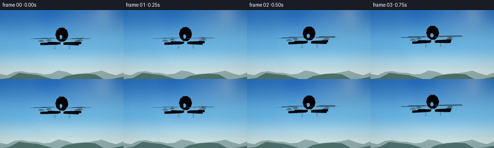
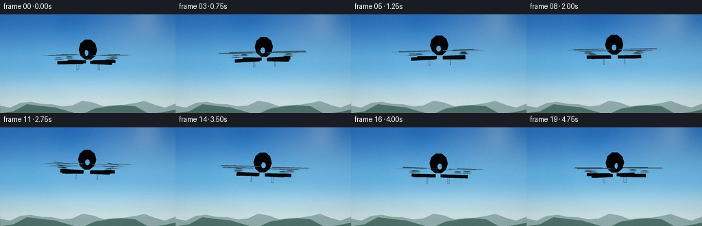
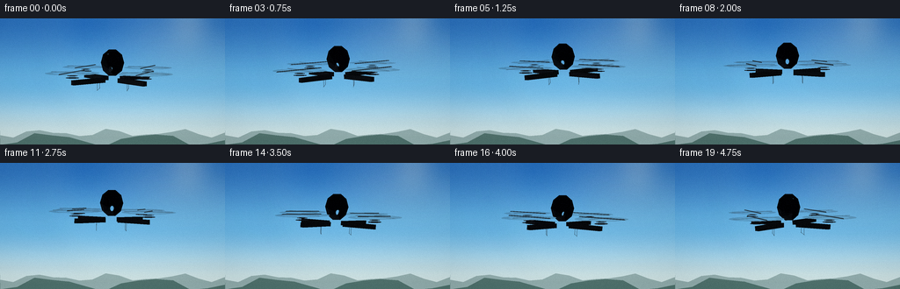
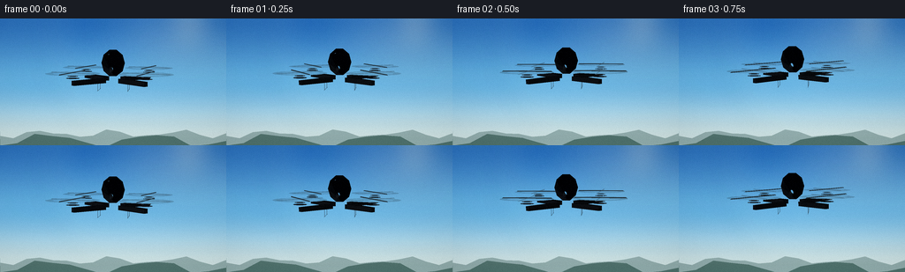
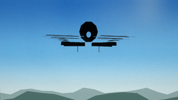
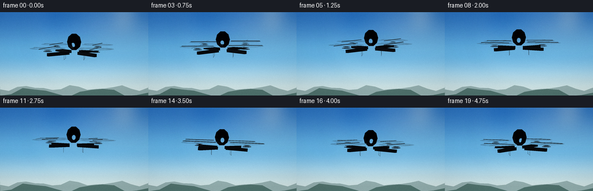
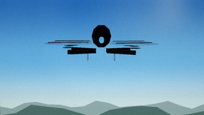
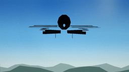

CODING AGENTS AS PIXEL WORLD MODELS
traex/DeepSeek-V4.1-Flash · instance_preservation_0041
点击播放 · 原生 RGB 像素
逐轮保存的候选
回放视频、检查图与代码变化。
每份候选均可单独播放。实际图片检查记录在下方工具轨迹中。
候选 01播放与检查图
点击播放 · 原生 RGB 像素


展开代码变化
--- 上一保存版本
+++ 本次保存版本
@@ -0,0 +1,398 @@
+from __future__ import annotations
+
+import math
+from pathlib import Path
+
+import numpy as np
+from PIL import Image, ImageDraw, ImageFilter
+
+import artifact_io
+
+
+CASE_DIR = Path(__file__).resolve().parent
+WIDTH = 256
+HEIGHT = 144
+FRAMES = 20
+FPS = 4.0
+SCALE = 4
+RW = WIDTH * SCALE
+RH = HEIGHT * SCALE
+
+
+def normalize(v: np.ndarray) -> np.ndarray:
+ return v / max(float(np.linalg.norm(v)), 1e-8)
+
+
+def smoothstep(edge0: float, edge1: float, x: np.ndarray | float):
+ t = np.clip((x - edge0) / (edge1 - edge0), 0.0, 1.0)
+ return t * t * (3.0 - 2.0 * t)
+
+
+def mix_color(a: tuple[int, int, int], b: tuple[int, int, int], t: float):
+ return tuple(int(a[i] * (1.0 - t) + b[i] * t) for i in range(3))
+
+
+def make_sky() -> Image.Image:
+ y = np.linspace(0.0, 1.0, RH, dtype=np.float32)[:, None]
+ x = np.linspace(0.0, 1.0, RW, dtype=np.float32)[None, :]
+
+ top = np.array([28, 102, 180], dtype=np.float32)
+ middle = np.array([101, 177, 222], dtype=np.float32)
+ horizon = np.array([208, 229, 229], dtype=np.float32)
+ blend1 = smoothstep(0.0, 0.52, y)
+ blend2 = smoothstep(0.48, 0.96, y)
+ sky = top[None, None, :] * (1 - blend1[..., None])
+ sky += middle[None, None, :] * blend1[..., None]
+ sky = sky * (1 - blend2[..., None]) + horizon[None, None, :] * blend2[..., None]
+ sky = np.broadcast_to(sky, (RH, RW, 3)).copy()
+
+ # Broad, quiet cloud banks add depth without competing with the subject.
+ cloud_layer = Image.new("L", (RW, RH), 0)
+ cd = ImageDraw.Draw(cloud_layer)
+ clouds = [
+ (-90, 38, 270, 54, 180),
+ (35, 62, 360, 72, 120),
+ (510, 46, 870, 90, 150),
+ (650, 113, 1030, 130, 190),
+ (-110, 126, 235, 136, 95),
+ ]
+ for x0, y0, x1, y1, alpha in clouds:
+ for i in range(18):
+ t = i / 17
+ cx = x0 + (x1 - x0) * t + 16 * math.sin(i * 1.7)
+ cy = (y0 + y1) * 0.5 + 10 * math.sin(i * 2.1)
+ rw = (x1 - x0) / 12 + 20 * math.sin(i * 0.9) ** 2
+ rh = (y1 - y0) * (0.35 + 0.32 * math.sin(i * 1.3) ** 2)
+ cd.ellipse((cx - rw, cy - rh, cx + rw, cy + rh), fill=int(alpha * 0.44))
+ cloud_layer = cloud_layer.filter(ImageFilter.GaussianBlur(17 * SCALE))
+
+ sky_img = Image.fromarray(np.clip(sky, 0, 255).astype(np.uint8))
+ white = Image.new("RGB", (RW, RH), (238, 246, 247))
+ sky_img = Image.composite(white, sky_img, cloud_layer)
+
+ # Soft solar glow in the upper right.
+ overlay = Image.new("RGBA", (RW, RH), (0, 0, 0, 0))
+ od = ImageDraw.Draw(overlay)
+ sx, sy = int(RW * 0.84), int(RH * 0.08)
+ for radius, alpha in [(170 * SCALE, 8), (105 * SCALE, 12), (56 * SCALE, 20), (18 * SCALE, 72)]:
+ od.ellipse((sx - radius, sy - radius, sx + radius, sy + radius), fill=(255, 247, 214, alpha))
+ overlay = overlay.filter(ImageFilter.GaussianBlur(12 * SCALE))
+ sky_img = Image.alpha_composite(sky_img.convert("RGBA"), overlay).convert("RGB")
+ return sky_img
+
+
+def draw_background(frame_index: int) -> Image.Image:
+ sky = make_sky()
+ d = ImageDraw.Draw(sky, "RGBA")
+ t = frame_index / (FRAMES - 1)
+
+ # Distant ridges sit just above the lower edge and reinforce the airborne view.
+ horizon = int(RH * 0.875)
+ far_points = [(0, RH), (0, horizon + int(2 * SCALE))]
+ for i in range(18):
+ px = int(RW * i / 17)
+ py = horizon + int(SCALE * (5 + 3.5 * math.sin(i * 1.23 + 0.7) + 2.0 * math.sin(i * 2.1)))
+ far_points.append((px, py))
+ far_points.extend([(RW, horizon + int(3 * SCALE)), (RW, RH)])
+ d.polygon(far_points, fill=(126, 156, 154, 190))
+
+ near_points = [(0, RH), (0, horizon + int(11 * SCALE))]
+ for i in range(14):
+ px = int(RW * i / 13)
+ py = horizon + int(SCALE * (12 + 6.5 * math.sin(i * 1.05 + 1.8) + 2.5 * math.sin(i * 2.4)))
+ near_points.append((px, py))
+ near_points.extend([(RW, horizon + int(13 * SCALE)), (RW, RH)])
+ d.polygon(near_points, fill=(75, 110, 104, 235))
+
+ # Thin, bright atmospheric haze at the ridgeline.
+ haze = Image.new("RGBA", (RW, RH), (0, 0, 0, 0))
+ hd = ImageDraw.Draw(haze)
+ hd.rectangle((0, horizon - 5 * SCALE, RW, horizon + 8 * SCALE), fill=(220, 236, 233, 28))
+ haze = haze.filter(ImageFilter.GaussianBlur(7 * SCALE))
+ sky = Image.alpha_composite(sky.convert("RGBA"), haze).convert("RGB")
+
+ # Gentle cloud parallax as the viewpoint drifts.
+ shift = int((t - 0.5) * 5 * SCALE)
+ veil = Image.new("RGBA", (RW, RH), (0, 0, 0, 0))
+ vd = ImageDraw.Draw(veil)
+ vd.ellipse((RW * 0.59 + shift, RH * 0.28, RW * 0.96 + shift, RH * 0.39),
+ fill=(255, 255, 255, 26))
+ vd.ellipse((RW * 0.05 + shift, RH * 0.40, RW * 0.31 + shift, RH * 0.48),
+ fill=(255, 255, 255, 18))
+ veil = veil.filter(ImageFilter.GaussianBlur(18 * SCALE))
+ return Image.alpha_composite(sky.convert("RGBA"), veil).convert("RGB")
+
+
+def make_camera(frame_index: int):
+ t = frame_index / (FRAMES - 1)
+ angle = math.radians(-8.0 + 16.0 * t)
+ distance = 10.8 + 0.22 * math.sin(t * math.pi)
+ target = np.array([0.0, 0.0, 2.45], dtype=float)
+ cam = target + np.array([math.sin(angle) * distance, -math.cos(angle) * distance, 0.12])
+ forward = normalize(target - cam)
+ right = normalize(np.cross(forward, np.array([0.0, 0.0, 1.0])))
+ up = normalize(np.cross(right, forward))
+ return cam, forward, right, up
+
+
+def project(points: np.ndarray, camera) -> tuple[np.ndarray, np.ndarray]:
+ cam, forward, right, up = camera
+ rel = np.asarray(points, dtype=float) - cam
+ depth = rel @ forward
+ px = rel @ right
+ py = rel @ up
+ focal = 6.8
+ sx = RW * 0.5 + px / np.maximum(depth, 0.05) * focal * RW / 3.6
+ sy = RH * 0.48 - py / np.maximum(depth, 0.05) * focal * RW / 3.6
+ return np.stack([sx, sy], axis=-1), depth
+
+
+def transform(points: np.ndarray, center: np.ndarray, yaw: float, pitch: float, roll: float) -> np.ndarray:
+ cy, sy = math.cos(yaw), math.sin(yaw)
+ cp, sp = math.cos(pitch), math.sin(pitch)
+ cr, sr = math.cos(roll), math.sin(roll)
+ rz = np.array([[cy, -sy, 0], [sy, cy, 0], [0, 0, 1]], dtype=float)
+ rx = np.array([[1, 0, 0], [0, cp, -sp], [0, sp, cp]], dtype=float)
+ ry = np.array([[cr, 0, sr], [0, 1, 0], [-sr, 0, cr]], dtype=float)
+ return (np.asarray(points) @ rz.T @ rx.T @ ry.T) + center
+
+
+def add_polygon(primitives, world_points, color, camera, alpha=255, outline=None, bias=0.0):
+ pts2, depth = project(world_points, camera)
+ primitives.append({
+ "kind": "poly",
+ "depth": float(np.mean(depth)) + bias,
+ "points": [tuple(p) for p in pts2],
+ "fill": tuple(color) + (alpha,),
+ "outline": outline,
+ })
+
+
+def add_ellipse(primitives, center_world, radii_world, color, camera, alpha=255, bias=0.0, outline=None):
+ center = np.asarray(center_world)
+ # Approximate the projected disc with a screen-space ellipse.
+ center2, depth = project(center[None, :], camera)
+ px_axis, _ = project(np.stack([center, center + np.array([radii_world[0], 0, 0])]), camera)
+ py_axis, _ = project(np.stack([center, center + np.array([0, radii_world[1], 0])]), camera)
+ rx = max(1.0, abs(px_axis[1, 0] - px_axis[0, 0]))
+ ry = max(1.0, abs(py_axis[1, 1] - py_axis[0, 1]))
+ cx, cy = center2[0]
+ primitives.append({
+ "kind": "ellipse",
+ "depth": float(depth[0]) + bias,
+ "box": (cx - rx, cy - ry, cx + rx, cy + ry),
+ "fill": tuple(color) + (alpha,),
+ "outline": outline,
+ })
+
+
+def add_line(primitives, a, b, color, width, camera, alpha=255, bias=0.0):
+ pts, depth = project(np.stack([a, b]), camera)
+ primitives.append({
+ "kind": "line",
+ "depth": float(np.mean(depth)) + bias,
+ "points": [tuple(p) for p in pts],
+ "fill": tuple(color) + (alpha,),
+ "width": max(1, int(width * SCALE)),
+ })
+
+
+def light_face(points: np.ndarray, base, light_dir, strength=1.0, ambient=0.55):
+ p0, p1, p2 = points[0], points[1], points[2]
+ normal = normalize(np.cross(p1 - p0, p2 - p0))
+ lambert = max(0.0, float(normal @ light_dir))
+ spec = max(0.0, float(normal @ normalize(light_dir + np.array([0.0, 0.0, 1.0])))) ** 18
+ shade = ambient + strength * (0.64 * lambert + 0.36 * spec)
+ rgb = tuple(int(np.clip(c * shade + 18 * spec, 0, 255)) for c in base)
+ return rgb
+
+
+def build_drone(frame_index: int):
+ t = frame_index / (FRAMES - 1)
+ bob = 0.10 * math.sin(2 * math.pi * t - 0.8)
+ sway = 0.035 * math.sin(2 * math.pi * t + 0.4)
+ center = np.array([sway, 0.03 * math.sin(2 * math.pi * t + 1.2), 2.55 + bob])
+ yaw = math.radians(-17.0 + 35.0 * t)
+ pitch = math.radians(2.0 * math.sin(2 * math.pi * t + 0.7))
+ roll = math.radians(-1.8 * math.sin(2 * math.pi * t + 0.1))
+ camera = make_camera(frame_index)
+ light = normalize(np.array([0.60, -0.35, 0.78]))
+ primitives = []
+
+ def world(points):
+ return transform(np.asarray(points, dtype=float), center, yaw, pitch, roll)
+
+ body_color = (22, 26, 29)
+
+ # Four tapered arms, each a solid prism with a narrow shoulder and wide tip.
+ arm_angles = [45, 135, 225, 315]
+ for angle_deg in arm_angles:
+ a = math.radians(angle_deg)
+ u = np.array([math.cos(a), math.sin(a), 0.0])
+ v = np.array([-math.sin(a), math.cos(a), 0.0])
+ shoulder = u * 0.28
+ tip = u * 1.12
+ width0, width1 = 0.115, 0.068
+ z0 = 0.01
+ verts = [
+ shoulder - v * width0 + np.array([0, 0, z0]),
+ shoulder + v * width0 + np.array([0, 0, z0]),
+ tip + v * width1 + np.array([0, 0, z0]),
+ tip - v * width1 + np.array([0, 0, z0]),
+ shoulder - v * width0 + np.array([0, 0, z0 - 0.10]),
+ shoulder + v * width0 + np.array([0, 0, z0 - 0.10]),
+ tip + v * width1 + np.array([0, 0, z0 - 0.10]),
+ tip - v * width1 + np.array([0, 0, z0 - 0.10]),
+ ]
+ wv = world(verts)
+ faces = [(0, 1, 2, 3), (4, 7, 6, 5), (0, 4, 5, 1), (1, 5, 6, 2),
+ (2, 6, 7, 3), (3, 7, 4, 0)]
+ for face in faces:
+ points = wv[list(face)]
+ col = light_face(points, body_color, light, 1.15, 0.50)
+ add_polygon(primitives, points, col, camera, bias=0.02)
+
+ # Motor housings.
+ hub_center = world(np.array([[tip[0], tip[1], 0.07]]))[0]
+ add_ellipse(primitives, hub_center, (0.155, 0.155), (31, 36, 39), camera, bias=0.0)
+ top = world(np.array([[tip[0], tip[1], 0.115]]))[0]
+ add_ellipse(primitives, top, (0.125, 0.125), (53, 60, 64), camera, bias=-0.02)
+ add_ellipse(primitives, top, (0.075, 0.075), (16, 19, 21), camera, bias=-0.03)
+
+ # Rotor blur disc and two visible blade strokes.
+ rotor_center = world(np.array([[tip[0], tip[1], 0.175]]))[0]
+ add_ellipse(primitives, rotor_center, (0.66, 0.66), (30, 36, 39), camera, alpha=42, bias=-0.08)
+ spin = yaw + t * math.pi * 3.2 + angle_deg * math.pi / 2
+ blade = np.array([
+ [tip[0] + math.cos(spin) * 0.58, tip[1] + math.sin(spin) * 0.58, 0.185],
+ [tip[0] - math.cos(spin) * 0.58, tip[1] - math.sin(spin) * 0.58, 0.185],
+ [tip[0] - math.cos(spin) * 0.55, tip[1] - math.sin(spin) * 0.55, 0.205],
+ [tip[0] + math.cos(spin) * 0.55, tip[1] + math.sin(spin) * 0.55, 0.205],
+ ])
+ add_polygon(primitives, world(blade), (35, 42, 46), camera, alpha=205, bias=-0.10)
+ cross = spin + math.pi / 2
+ blade2 = np.array([
+ [tip[0] + math.cos(cross) * 0.55, tip[1] + math.sin(cross) * 0.55, 0.18],
+ [tip[0] - math.cos(cross) * 0.55, tip[1] - math.sin(cross) * 0.55, 0.18],
+ [tip[0] - math.cos(cross) * 0.52, tip[1] - math.sin(cross) * 0.52, 0.197],
+ [tip[0] + math.cos(cross) * 0.52, tip[1] + math.sin(cross) * 0.52, 0.197],
+ ])
+ add_polygon(primitives, world(blade2), (47, 54, 58), camera, alpha=105, bias=-0.09)
+
+ # Layered faceted fuselage gives the silhouette a believable, glossy shell.
+ body_slices = [
+ (-0.39, 0.08, 0.10, 0.26),
+ (-0.25, 0.23, 0.28, 0.34),
+ (-0.05, 0.30, 0.34, 0.37),
+ (0.17, 0.27, 0.31, 0.34),
+ (0.34, 0.17, 0.20, 0.27),
+ ]
+ sides = 10
+ for i in range(len(body_slices) - 1):
+ y0, w0, h0, z0 = body_slices[i]
+ y1, w1, h1, z1 = body_slices[i + 1]
+ for side in range(sides):
+ a0 = 2 * math.pi * side / sides
+ a1 = 2 * math.pi * (side + 1) / sides
+ quad = np.array([
+ [math.cos(a0) * w0, y0, z0 + math.sin(a0) * h0],
+ [math.cos(a1) * w0, y0, z0 + math.sin(a1) * h0],
+ [math.cos(a1) * w1, y1, z1 + math.sin(a1) * h1],
+ [math.cos(a0) * w1, y1, z1 + math.sin(a0) * h1],
+ ])
+ points = world(quad)
+ col = light_face(points, (15, 18, 20), light, 1.5, 0.45)
+ add_polygon(primitives, points, col, camera, bias=-0.01)
+
+ # A slim canopy highlight along the upper shell.
+ canopy = np.array([
+ [-0.13, -0.18, 0.57], [0.10, -0.10, 0.58], [0.20, 0.17, 0.50],
+ [0.04, 0.25, 0.49], [-0.18, 0.08, 0.53],
+ ])
+ add_polygon(primitives, world(canopy), (54, 65, 69), camera, alpha=155, bias=-0.02)
+
+ # Forward sensor pod and lens.
+ pod_center = world(np.array([[0.0, 0.31, 0.13]]))[0]
+ add_ellipse(primitives, pod_center, (0.16, 0.13), (13, 16, 18), camera, bias=-0.03)
+ lens_center = world(np.array([[0.0, 0.405, 0.10]]))[0]
+ add_ellipse(primitives, lens_center, (0.075, 0.075), (7, 11, 13), camera, bias=-0.05)
+ add_ellipse(primitives, lens_center + np.array([-0.012, 0.002, 0.018]), (0.027, 0.027),
+ (36, 78, 90), camera, alpha=180, bias=-0.06)
+
+ # Landing skids.
+ for side in (-1, 1):
+ rail_z = -0.29
+ x = side * 0.35
+ p0 = world(np.array([[x, -0.20, rail_z]]))[0]
+ p1 = world(np.array([[x, 0.30, rail_z]]))[0]
+ add_line(primitives, p0, p1, (12, 15, 17), 0.025, camera, bias=-0.04)
+ for y in (-0.14, 0.24):
+ q0 = world(np.array([[x, y, -0.04]]))[0]
+ q1 = world(np.array([[x, y, rail_z]]))[0]
+ add_line(primitives, q0, q1, (24, 28, 30), 0.018, camera, bias=-0.03)
+
+ return primitives, center, camera
+
+
+def render_drone(base: Image.Image, primitives, center, camera) -> Image.Image:
+ layer = Image.new("RGBA", (RW, RH), (0, 0, 0, 0))
+ d = ImageDraw.Draw(layer, "RGBA")
+
+ # Subtle cool rim light silhouette helps the dark craft separate from the sky.
+ c2, _ = project(center[None, :], camera)
+ cx, cy = c2[0]
+ halo = Image.new("RGBA", (RW, RH), (0, 0, 0, 0))
+ hd = ImageDraw.Draw(halo)
+ hd.ellipse((cx - 1.32 * SCALE * 31, cy - 0.38 * SCALE * 31,
+ cx + 1.32 * SCALE * 31, cy + 0.38 * SCALE * 31),
+ fill=(206, 238, 246, 28))
+ halo = halo.filter(ImageFilter.GaussianBlur(12 * SCALE))
+ layer = Image.alpha_composite(layer, halo)
+ d = ImageDraw.Draw(layer, "RGBA")
+
+ for item in sorted(primitives, key=lambda p: p["depth"], reverse=True):
+ if item["kind"] == "poly":
+ d.polygon(item["points"], fill=item["fill"], outline=item["outline"])
+ elif item["kind"] == "ellipse":
+ d.ellipse(item["box"], fill=item["fill"], outline=item["outline"])
+ elif item["kind"] == "line":
+ d.line(item["points"], fill=item["fill"], width=item["width"], joint="curve")
+
+ return Image.alpha_composite(base.convert("RGBA"), layer).convert("RGB")
+
+
+def post_process(image: Image.Image, frame_index: int) -> Image.Image:
+ small = image.resize((WIDTH, HEIGHT), Image.Resampling.LANCZOS)
+ arr = np.asarray(small, dtype=np.float32)
+
+ # Very light filmic contrast and color shaping.
+ arr = (arr - 127.5) * 1.045 + 127.5
+ arr[..., 2] += 1.5
+ arr[..., 0] += 0.5
+
+ yy, xx = np.mgrid[0:HEIGHT, 0:WIDTH]
+ nx = (xx - WIDTH * 0.5) / (WIDTH * 0.5)
+ ny = (yy - HEIGHT * 0.5) / (HEIGHT * 0.5)
+ vignette = 1.0 - 0.075 * np.clip(nx * nx * 0.62 + ny * ny * 0.38, 0, 1)
+ arr *= vignette[..., None]
+
+ rng = np.random.default_rng(4100 + frame_index)
+ grain = rng.normal(0.0, 1.25, (HEIGHT, WIDTH, 1))
+ arr += grain
+ return Image.fromarray(np.clip(arr, 0, 255).astype(np.uint8), "RGB")
+
+
+def generate() -> np.ndarray:
+ frames = []
+ for index in range(FRAMES):
+ background = draw_background(index)
+ primitives, center, camera = build_drone(index)
+ rendered = render_drone(background, primitives, center, camera)
+ frames.append(np.asarray(post_process(rendered, index), dtype=np.uint8))
+ return np.stack(frames)
+
+
+if __name__ == "__main__":
+ frames = generate()
+ artifact_io.save(frames, CASE_DIR)
+ print(f"Saved {len(frames)} frames to {CASE_DIR}")
候选 02播放与检查图
点击播放 · 原生 RGB 像素

展开代码变化
--- 上一保存版本
+++ 本次保存版本
@@ -125,10 +125,10 @@
def make_camera(frame_index: int):
t = frame_index / (FRAMES - 1)
- angle = math.radians(-8.0 + 16.0 * t)
- distance = 10.8 + 0.22 * math.sin(t * math.pi)
+ angle = math.radians(-10.0 + 20.0 * t)
+ distance = 9.9 + 0.18 * math.sin(t * math.pi)
target = np.array([0.0, 0.0, 2.45], dtype=float)
- cam = target + np.array([math.sin(angle) * distance, -math.cos(angle) * distance, 0.12])
+ cam = target + np.array([math.sin(angle) * distance, -math.cos(angle) * distance, 0.92])
forward = normalize(target - cam)
right = normalize(np.cross(forward, np.array([0.0, 0.0, 1.0])))
up = normalize(np.cross(right, forward))
@@ -186,6 +186,16 @@
})
+def add_flat_circle(primitives, world_center, radius, color, camera, alpha=255, bias=0.0, segments=32):
+ angles = np.linspace(0.0, 2.0 * math.pi, segments, endpoint=False)
+ points = np.asarray(world_center) + np.stack([
+ np.cos(angles) * radius,
+ np.sin(angles) * radius,
+ np.zeros_like(angles),
+ ], axis=1)
+ add_polygon(primitives, points, color, camera, alpha=alpha, bias=bias)
+
+
def add_line(primitives, a, b, color, width, camera, alpha=255, bias=0.0):
pts, depth = project(np.stack([a, b]), camera)
primitives.append({
@@ -232,7 +242,7 @@
v = np.array([-math.sin(a), math.cos(a), 0.0])
shoulder = u * 0.28
tip = u * 1.12
- width0, width1 = 0.115, 0.068
+ width0, width1 = 0.082, 0.047
z0 = 0.01
verts = [
shoulder - v * width0 + np.array([0, 0, z0]),
@@ -254,14 +264,15 @@
# Motor housings.
hub_center = world(np.array([[tip[0], tip[1], 0.07]]))[0]
- add_ellipse(primitives, hub_center, (0.155, 0.155), (31, 36, 39), camera, bias=0.0)
+ add_ellipse(primitives, hub_center, (0.145, 0.145), (20, 24, 27), camera, bias=0.0)
top = world(np.array([[tip[0], tip[1], 0.115]]))[0]
- add_ellipse(primitives, top, (0.125, 0.125), (53, 60, 64), camera, bias=-0.02)
- add_ellipse(primitives, top, (0.075, 0.075), (16, 19, 21), camera, bias=-0.03)
+ add_ellipse(primitives, top, (0.115, 0.115), (42, 49, 53), camera, bias=-0.02)
+ add_ellipse(primitives, top, (0.064, 0.064), (10, 13, 15), camera, bias=-0.03)
# Rotor blur disc and two visible blade strokes.
rotor_center = world(np.array([[tip[0], tip[1], 0.175]]))[0]
- add_ellipse(primitives, rotor_center, (0.66, 0.66), (30, 36, 39), camera, alpha=42, bias=-0.08)
+ add_flat_circle(primitives, rotor_center, 0.59, (20, 27, 30), camera, alpha=48, bias=-0.08)
+ add_flat_circle(primitives, rotor_center, 0.43, (36, 44, 47), camera, alpha=24, bias=-0.085)
spin = yaw + t * math.pi * 3.2 + angle_deg * math.pi / 2
blade = np.array([
[tip[0] + math.cos(spin) * 0.58, tip[1] + math.sin(spin) * 0.58, 0.185],
@@ -269,7 +280,7 @@
[tip[0] - math.cos(spin) * 0.55, tip[1] - math.sin(spin) * 0.55, 0.205],
[tip[0] + math.cos(spin) * 0.55, tip[1] + math.sin(spin) * 0.55, 0.205],
])
- add_polygon(primitives, world(blade), (35, 42, 46), camera, alpha=205, bias=-0.10)
+ add_polygon(primitives, world(blade), (27, 34, 37), camera, alpha=220, bias=-0.10)
cross = spin + math.pi / 2
blade2 = np.array([
[tip[0] + math.cos(cross) * 0.55, tip[1] + math.sin(cross) * 0.55, 0.18],
@@ -277,15 +288,15 @@
[tip[0] - math.cos(cross) * 0.52, tip[1] - math.sin(cross) * 0.52, 0.197],
[tip[0] + math.cos(cross) * 0.52, tip[1] + math.sin(cross) * 0.52, 0.197],
])
- add_polygon(primitives, world(blade2), (47, 54, 58), camera, alpha=105, bias=-0.09)
+ add_polygon(primitives, world(blade2), (36, 43, 46), camera, alpha=90, bias=-0.09)
# Layered faceted fuselage gives the silhouette a believable, glossy shell.
body_slices = [
- (-0.39, 0.08, 0.10, 0.26),
- (-0.25, 0.23, 0.28, 0.34),
- (-0.05, 0.30, 0.34, 0.37),
- (0.17, 0.27, 0.31, 0.34),
- (0.34, 0.17, 0.20, 0.27),
+ (-0.39, 0.07, 0.09, 0.25),
+ (-0.27, 0.19, 0.24, 0.31),
+ (-0.08, 0.25, 0.30, 0.34),
+ (0.14, 0.23, 0.27, 0.32),
+ (0.31, 0.14, 0.17, 0.25),
]
sides = 10
for i in range(len(body_slices) - 1):
@@ -301,7 +312,7 @@
[math.cos(a0) * w1, y1, z1 + math.sin(a0) * h1],
])
points = world(quad)
- col = light_face(points, (15, 18, 20), light, 1.5, 0.45)
+ col = light_face(points, (13, 16, 18), light, 1.7, 0.42)
add_polygon(primitives, points, col, camera, bias=-0.01)
# A slim canopy highlight along the upper shell.
@@ -312,10 +323,10 @@
add_polygon(primitives, world(canopy), (54, 65, 69), camera, alpha=155, bias=-0.02)
# Forward sensor pod and lens.
- pod_center = world(np.array([[0.0, 0.31, 0.13]]))[0]
- add_ellipse(primitives, pod_center, (0.16, 0.13), (13, 16, 18), camera, bias=-0.03)
- lens_center = world(np.array([[0.0, 0.405, 0.10]]))[0]
- add_ellipse(primitives, lens_center, (0.075, 0.075), (7, 11, 13), camera, bias=-0.05)
+ pod_center = world(np.array([[0.0, 0.29, 0.12]]))[0]
+ add_ellipse(primitives, pod_center, (0.14, 0.12), (10, 13, 15), camera, bias=-0.03)
+ lens_center = world(np.array([[0.0, 0.37, 0.09]]))[0]
+ add_ellipse(primitives, lens_center, (0.065, 0.065), (5, 9, 11), camera, bias=-0.05)
add_ellipse(primitives, lens_center + np.array([-0.012, 0.002, 0.018]), (0.027, 0.027),
(36, 78, 90), camera, alpha=180, bias=-0.06)
候选 03播放与检查图

候选 04播放与检查图
点击播放 · 原生 RGB 像素


展开代码变化
--- 上一保存版本
+++ 本次保存版本
@@ -273,7 +273,7 @@
rotor_center = world(np.array([[tip[0], tip[1], 0.175]]))[0]
add_flat_circle(primitives, rotor_center, 0.59, (20, 27, 30), camera, alpha=48, bias=-0.08)
add_flat_circle(primitives, rotor_center, 0.43, (36, 44, 47), camera, alpha=24, bias=-0.085)
- spin = yaw + t * math.pi * 3.2 + angle_deg * math.pi / 2
+ spin = yaw + t * math.pi * 5.0 + angle_deg * math.pi / 2
blade = np.array([
[tip[0] + math.cos(spin) * 0.58, tip[1] + math.sin(spin) * 0.58, 0.185],
[tip[0] - math.cos(spin) * 0.58, tip[1] - math.sin(spin) * 0.58, 0.185],
@@ -292,11 +292,13 @@
# Layered faceted fuselage gives the silhouette a believable, glossy shell.
body_slices = [
- (-0.39, 0.07, 0.09, 0.25),
- (-0.27, 0.19, 0.24, 0.31),
- (-0.08, 0.25, 0.30, 0.34),
- (0.14, 0.23, 0.27, 0.32),
- (0.31, 0.14, 0.17, 0.25),
+ (-0.43, 0.045, 0.065, 0.24),
+ (-0.35, 0.12, 0.17, 0.28),
+ (-0.25, 0.21, 0.26, 0.32),
+ (-0.09, 0.27, 0.32, 0.36),
+ (0.11, 0.25, 0.29, 0.34),
+ (0.27, 0.18, 0.21, 0.29),
+ (0.36, 0.09, 0.11, 0.24),
]
sides = 10
for i in range(len(body_slices) - 1):
@@ -312,15 +314,20 @@
[math.cos(a0) * w1, y1, z1 + math.sin(a0) * h1],
])
points = world(quad)
- col = light_face(points, (13, 16, 18), light, 1.7, 0.42)
+ col = light_face(points, (13, 16, 18), light, 1.9, 0.40)
add_polygon(primitives, points, col, camera, bias=-0.01)
- # A slim canopy highlight along the upper shell.
+ # A narrow satin canopy catches the sky and defines the upper shell.
canopy = np.array([
- [-0.13, -0.18, 0.57], [0.10, -0.10, 0.58], [0.20, 0.17, 0.50],
- [0.04, 0.25, 0.49], [-0.18, 0.08, 0.53],
+ [-0.10, -0.23, 0.555], [0.075, -0.18, 0.565], [0.16, 0.06, 0.525],
+ [0.09, 0.17, 0.505], [-0.13, 0.07, 0.525],
])
- add_polygon(primitives, world(canopy), (54, 65, 69), camera, alpha=155, bias=-0.02)
+ add_polygon(primitives, world(canopy), (57, 72, 77), camera, alpha=140, bias=-0.02)
+ canopy_edge = np.array([
+ [-0.105, -0.225, 0.56], [0.075, -0.175, 0.57], [0.12, -0.04, 0.545],
+ [0.085, -0.075, 0.575], [-0.09, -0.18, 0.568],
+ ])
+ add_polygon(primitives, world(canopy_edge), (125, 153, 158), camera, alpha=120, bias=-0.025)
# Forward sensor pod and lens.
pod_center = world(np.array([[0.0, 0.29, 0.12]]))[0]
@@ -350,17 +357,6 @@
d = ImageDraw.Draw(layer, "RGBA")
# Subtle cool rim light silhouette helps the dark craft separate from the sky.
- c2, _ = project(center[None, :], camera)
- cx, cy = c2[0]
- halo = Image.new("RGBA", (RW, RH), (0, 0, 0, 0))
- hd = ImageDraw.Draw(halo)
- hd.ellipse((cx - 1.32 * SCALE * 31, cy - 0.38 * SCALE * 31,
- cx + 1.32 * SCALE * 31, cy + 0.38 * SCALE * 31),
- fill=(206, 238, 246, 28))
- halo = halo.filter(ImageFilter.GaussianBlur(12 * SCALE))
- layer = Image.alpha_composite(layer, halo)
- d = ImageDraw.Draw(layer, "RGBA")
-
for item in sorted(primitives, key=lambda p: p["depth"], reverse=True):
if item["kind"] == "poly":
d.polygon(item["points"], fill=item["fill"], outline=item["outline"])
候选 05播放与检查图
点击播放 · 原生 RGB 像素
展开代码变化
--- 上一保存版本
+++ 本次保存版本
@@ -386,7 +386,7 @@
rng = np.random.default_rng(4100 + frame_index)
grain = rng.normal(0.0, 1.25, (HEIGHT, WIDTH, 1))
arr += grain
- return Image.fromarray(np.clip(arr, 0, 255).astype(np.uint8), "RGB")
+ return Image.fromarray(np.clip(arr, 0, 255).astype(np.uint8))
def generate() -> np.ndarray:
可观测工具轨迹
实际执行的命令与返回图片。
命令 1exit 0
/bin/bash -c "pwd && rg --files -g 'prompt.txt' -g 'GENERATION_RULES.md' -g 'task_spec.json' -g '"'!node_modules'"'"
命令 2exit 0
/bin/bash -c 'ls -la'
命令 3exit 0
/bin/bash -c 'cat GENERATION_RULES.md'
命令 4exit 0
/bin/bash -c 'cat task_spec.json'
命令 5exit 0
/bin/bash -c 'cat prompt.txt'
命令 6exit 0
/bin/bash -c "sed -n '1,260p' artifact_io.py"
命令 7exit 1
/bin/bash -c 'python generate.py'
命令 8exit 0
/bin/bash -c "python - <<'PY' import generate s=generate.make_sky PY"
命令 9exit 0
/bin/bash -c "python - <<'PY'
import generate
from PIL import Image, ImageDraw, ImageFilter
import numpy as np, math
RW,RH=generate.RW,generate.RH
y=np.linspace(0.,1.,RH,dtype=np.float32)[:,None]; x=np.linspace(0.,1.,RW,dtype=np.float32)[None,:]
sky=np.zeros((RH,RW,3),dtype=np.float32)
im=Image.fromarray(np.clip(sky,0,255).astype(np.uint8), 'RGB')
ov=Image.new('RGBA',(RW,RH),(0,0,0,0))
print(im.size, ov.size)
PY"命令 10exit 0
/bin/bash -c "python - <<'PY'
import generate
from PIL import Image, ImageDraw, ImageFilter
import numpy as np, math
RW,RH=generate.RW,generate.RH
sky=np.zeros((RH,RW,3),dtype=np.float32)
im=Image.fromarray(np.clip(sky,0,255).astype(np.uint8), 'RGB')
cl=Image.new('L',(RW,RH),0)
d=ImageDraw.Draw(cl)
d.ellipse((10,10,20,20),fill=100)
cl=cl.filter(ImageFilter.GaussianBlur(17*generate.SCALE))
print(cl.size, cl.mode)
white=Image.new('RGB',(RW,RH),(238,246,247))
try:
o=Image.composite(white, im, cl)
print('comp',o.size)
except Exception as e: print('comp err',e)
ov=Image.new('RGBA',(RW,RH),(0,0,0,0))
try:
o=Image.alpha_composite(im.convert('RGBA'), ov)
print('alpha',o.size)
except Exception as e: print('alpha err',repr(e))
PY"命令 11exit 1
/bin/bash -c 'python generate.py'
命令 12exit 0
/bin/bash -c "nl -ba generate.py | sed -n '24,90p'"
命令 13exit 1
/bin/bash -c "python - <<'PY'
import generate
import math
from PIL import Image, ImageDraw, ImageFilter
import numpy as np
RW,RH=generate.RW,generate.RH
y=np.linspace(0.,1.,RH,dtype=np.float32)[:,None]; x=np.linspace(0.,1.,RW,dtype=np.float32)[None,:]
top=np.array([28,102,180],dtype=np.float32); middle=np.array([101,177,222],dtype=np.float32); horizon=np.array([208,229,229],dtype=np.float32)
blend1=generate.smoothstep(0.,.52,y); blend2=generate.smoothstep(.48,.96,y)
sky=top[None,None,:]*(1-blend1[...,None]); sky+=middle[None,None,:]*blend1[...,None]; sky=sky*(1-blend2[...,None])+horizon[None,None,:]*blend2[...,None]
cl=Image.new('L',(RW,RH),0); cd=ImageDraw.Draw(cl)
clouds=[(-90,38,270,54,180),(35,62,360,72,120),(510,46,870,90,150),(650,113,1030,130,190),(-110,126,235,136,95)]
for x0,y0,x1,y1,alpha in clouds:
for i in range(18):
t=i/17; cx=x0+(x1-x0)*t+16*math.sin(i*1.7); cy=(y0+y1)*.5+10*math.sin(i*2.1); rw=(x1-x0)/12+20*math.sin(i*.9)**2; rh=(y1-y0)*(.35+.32*math.sin(i*1.3)**2); cd.ellipse((cx-rw,cy-rh,cx+rw,cy+rh),fill=int(alpha*.44))
cl=cl.filter(ImageFilter.GaussianBlur(17*generate.SCALE)); print('cl',cl.size)
im=Image.fromarray(np.clip(sky,0,255).astype(np.uint8)); print('im',im.size)
w=Image.new('RGB',(RW,RH),(238,246,247)); im=Image.composite(w,im,cl); print('im2',im.size)
ov=Image.new('RGBA',(RW,RH),(0,0,0,0)); print('ov',ov.size)
im=Image.alpha_composite(im.convert('RGBA'),ov); print('im3',im.size)
PY"命令 14exit 0
/bin/bash -c 'python generate.py'
命令 15exit 0
/bin/bash -c 'python generate.py'
命令 16exit 1
/bin/bash -c 'python generate.py'
命令 17exit 0
/bin/bash -c "nl -ba generate.py | sed -n '250,310p'"
命令 18exit 0
/bin/bash -c 'python generate.py'
命令 19exit 0
/bin/bash -c "ffprobe -v error -show_entries stream=codec_name,width,height,nb_frames,r_frame_rate -show_entries format=duration,size -of default=noprint_wrappers=1 index.html 2>/dev/null || true
python - <<'PY'
import json, re
from pathlib import Path
from PIL import Image
p=Path('index.html').read_text()
print('html bytes:', len(p))
print('frames on disk:', len(list(Path('frames').glob('*.png'))))
print('frame size:', Image.open('frames/00.png').size)
print('inspection size:', Image.open('inspection.png').size)
PY"命令 20exit 0
/bin/bash -c "python - <<'PY'
from pathlib import Path
import numpy as np
from PIL import Image
files=sorted(Path('frames').glob('*.png'))
arr=np.stack([np.asarray(Image.open(p)) for p in files])
print('shape', arr.shape, 'dtype', arr.dtype)
print('rgb min/max', arr.min(axis=(0,1,2)).tolist(), arr.max(axis=(0,1,2)).tolist())
diff=np.abs(arr[1:].astype(int)-arr[:-1].astype(int)).mean(axis=(1,2,3))
print('motion mean min/max', round(float(diff.min()),3), round(float(diff.max()),3))
print('nonzero delta frames', int((diff>0.05).sum()))
print('pixels file', Path('pixels.npz').stat().st_size)
PY"命令 21exit 0
/bin/bash -c 'python -m py_compile generate.py && git status --short 2>/dev/null || true && ls -lh generate.py index.html pixels.npz inspection.png transition_check.png'
命令 22exit 0
/bin/bash -c "python - <<'PY'
from PIL import Image
import numpy as np
im=np.asarray(Image.open('frames/10.png')).astype(int)
# Center crop around subject, report mean color / contrast.
c=im[25:115,45:210]
print('subject region mean RGB', c.mean(axis=(0,1)).round(1).tolist())
print('subject region luminance range', int(c.mean(axis=2).min()), int(c.mean(axis=2).max()))
PY"命令 23exit 1
/bin/bash -c "python - <<'PY'
import json
from pathlib import Path
p=Path('index.html').read_text()
payload=p.split('const payload = ',1)[1].split(';',1)[0]
data=json.loads(payload)
print({k:data[k] for k in ('width','height','frames','fps','audio')})
print('caption:', data['caption'])
print('delta count:', len(data['deltas']), 'empty deltas:', sum(not d for d in data['deltas']))
PY"命令 24exit 0
/bin/bash -c 'rg -n "const |let |DATA|__DATA__" player_template.html | head -20'
命令 25exit 0
/bin/bash -c "python - <<'PY'
import json
from pathlib import Path
p=Path('index.html').read_text()
payload=p.split(\"const DATA=\",1)[1].split(\",W=DATA.width\",1)[0]
data=json.loads(payload)
print({k:data[k] for k in ('width','height','frames','fps','audio')})
print('caption:', data['caption'])
print('delta count:', len(data['deltas']), 'empty deltas:', sum(not d for d in data['deltas']))
PY"命令 26exit 0
/bin/bash -c 'python generate.py'
视觉工具实际返回图片 1

视觉工具实际返回图片 2

视觉工具实际返回图片 3

视觉工具实际返回图片 4

视觉工具实际返回图片 5

视觉工具实际返回图片 6

视觉工具实际返回图片 7

保存候选 5 份；完成命令 26 次；可验证图片返回 7 张。原始 API 响应与完整日志保留在本地。